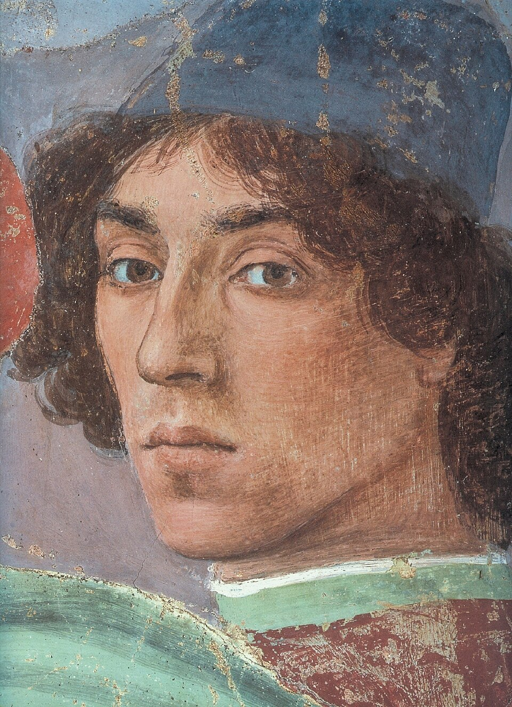
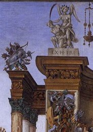

Filippino Lippi
vers 1457–1504
Élève de Botticelli, héritier de Masaccio, Filippino Lippi fait entrer le trouble et la fantaisie dans la Renaissance florentine.

En quelques mots
Né vers 1457, Filippino Lippi est le fils du peintre Fra Filippo Lippi. Formé dans l'atelier de Botticelli, il participe à l'achèvement des fresques de la chapelle Brancacci, commencées par Masaccio. Mais il développe rapidement un style personnel : personnages expressifs, décors foisonnants et architectures étranges. À la fin du XVe siècle, sa peinture révèle une Renaissance moins sereine, plus inquiète et théâtrale.
L’Apparition de la Vierge à saint Bernard

Reproduction fidèle d’une œuvre du domaine public — photographe non identifié · Domaine public — Public Domain Mark 1.0 (PD-Art)
À regarder
Regardez la délicatesse des gestes et la proximité des visages. La Vierge apparaît entourée d'anges, mais la scène semble presque familière. Filippino transforme une vision miraculeuse en rencontre pleine de douceur et d'émotion.
À comprendre
Filippino transforme une vision miraculeuse en rencontre pleine de douceur et d'émotion.

L’Adoration des Mages

Google Arts & Culture — reproduction photographique · Domaine public — Public Domain Mark 1.0 (PD-Art)
À regarder
Le regard se perd dans la foule : personnages agenouillés, chevaux, conversations et petites scènes à l'arrière-plan. Pourtant, tout converge vers l'Enfant Jésus.
À comprendre
Filippino transforme un épisode biblique en un spectacle vivant où le sacré rencontre le monde des hommes.
Saint Philippe et le dragon

Photographe non identifié — Wikimedia Commons · Domaine public indiqué sur Wikimedia Commons — auteur de la photographie non identifié
À regarder
Observez les architectures antiques, les statues et les personnages agités. Au milieu de ce décor spectaculaire, un dragon surgit du temple.
À comprendre
Filippino mêle références à l'Antiquité, récit religieux et imagination fantastique : la Renaissance devient un véritable théâtre.
Léonard et Filippino : une commande, deux destins

Les personnages surgissent de l'ombre, les gestes s'entrecroisent et la composition semble en pleine recherche.
Les couleurs, les costumes et les détails foisonnent. La scène est plus lumineuse et organisée autour de l'Enfant Jésus. La scène est plus lumineuse et organisée autour de l'Enfant Jésus.
Deux visions d'un même sujet :
Léonard laisse son Adoration des Mages inachevée en 1481.
Filippino reprend la commande et livre son tableau en 1496.
Léonard explore le mouvement, Filippino privilégie le récit.
À regarder
Deux visions d'un même sujet : Léonard explore le mouvement, Filippino privilégie le récit.
À comprendre
Deux œuvres, deux démarches : l'une révèle la recherche du peintre, l'autre présente une composition achevée.
Comment reconnaître Filippino Lippi ?

Des visages expressifs et délicats
Ses personnages ont des regards intenses, des visages fins et des gestes subtils. Ils semblent habités par une émotion intérieure.
Des compositions foisonnantes
Filippino aime multiplier les personnages, les mouvements et les petits épisodes secondaires. Le regard circule sans cesse dans ses tableaux.

Des décors antiques presque fantastiques
Colonnes, statues, ornements et architectures imaginaires envahissent ses scènes. L'Antiquité devient un décor spectaculaire, parfois inquiétant.
Une Renaissance théâtrale et agitée
Là où d'autres recherchent l'équilibre et le calme, Filippino privilégie les attitudes mouvementées, les drapés tourmentés et les scènes pleines de tension.
À retenir
Filippino Lippi hérite de la grâce de Botticelli, mais développe un univers bien à lui : des visages expressifs, des compositions foisonnantes et des décors antiques parfois presque fantastiques.
Chez lui, la Renaissance devient plus théâtrale, plus mouvementée, parfois même inquiétante.
Avec Filippino Lippi, la beauté ne suffit plus : la peinture cherche aussi à surprendre, à émouvoir et à raconter.
Poursuivre la découverte
Retrouver la grâce de son maître.
Découvrir l’héritage de la chapelle Brancacci.